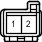

Код детали
A59
Каталожный номер
90980-10962
Цвет
Черный
Технические характеристики
Жгуты проводов для ремонта

Система
A-TRC (для моделей с 1GR-FE, 1KD-FTV)
АБС (для моделей с 1GR-FE, 1KD-FTV)
АБС (для моделей с 2TR-FE, 5L-E)
Система Crawl (для моделей с 1GR-FE, 1KD-FTV)
Система круиз-контроля (для моделей с 1GR-FE)
Система круиз-контроля (для моделей с 1KD-FTV)
Система помощи при спуске по склону (для моделей с 1GR-FE, 1KD-FTV)
Динамическая радарная система круиз-контроля (для моделей с 1GR-FE)
Динамическая радарная система круиз-контроля (для моделей с 1KD-FTV)
Индикатор ECT и A/T (для моделей с 1GR-FE)
Индикатор ECT и A/T (для моделей с 1KD-FTV)
Индикатор ECT и A/T (для моделей с 2TR-FE)
Электронная система управления пневматической подвеской (для моделей с правосторонним рулевым управлением)
Система управления двигателем (для моделей с 1GR-FE)
Система управления двигателем (для моделей с 1KD-FTV)
Система управления двигателем (для моделей с 2TR-FE)
Система управления двигателем (для моделей с 5L-E)
Иммобилайзер двигателя (для моделей с системой посадки и запуска)
Система посадки и запуска
Система помощи при подъеме по склону (для моделей с 1GR-FE, 1KD-FTV)
Переключатель выбора "Multi-Terrain" (для моделей с 1GR-FE, 1KD-FTV)
Предаварийная система безопасности
Система блокировки селектора (для моделей с 1GR-FE, 1KD-FTV)
Система блокировки селектора (для моделей с 2TR-FE)
Система запуска (для моделей с системой посадки и запуска)
Система блокировки рулевого управления (для моделей с системой посадки и запуска)
Стоп-сигналы
TRC (для моделей с 2TR-FE)
Сцепное устройство для прицепа
VSC (для моделей с 1GR-FE, 1KD-FTV)
VSC (для моделей с 2TR-FE)
Система дистанционной блокировки дверей (для моделей с системой посадки и запуска)